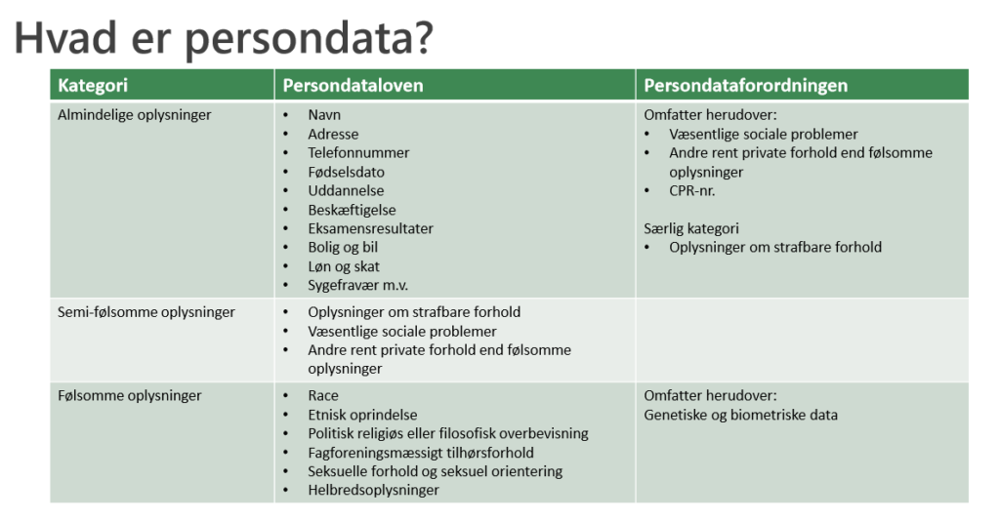

TJEKLISTE
Nedenstående spørgsmål er relateret til de vigtigste hovedområder i persondataforordningen. Virksomheden bør gøre sig i stand til at besvare og dokumentere sine svar på disse spørgsmål:
1. Er virksomheden omfattet af forordningen? – grundlæggende er alle data persondata, så snart der er data med fra en telefonbog, så udgangspunkt er, at alle virksomheder er med.
2. Er informationerne, som virksomheden ønsker at behandle, omfattet af forordningen; er informationerne at betragte som personoplysninger?
3. Hvilke kategorier af personoplysninger ønsker virksomheden at behandle?
4. Hvilke behandlinger ønsker virksomheden at foretage?
5. Spiller virksomheden en rolle som dataansvarlig eller databehandler i forhold til de konkrete behandlinger?
6. Har virksomheden et retligt grundlag til at behandle de ønskede kategorier af personoplysninger?
7. Opfylder virksomheden principperne for behandling af oplysningerne?
8. Er behandlingen nødvendig (proportional)?
9. Kan virksomheden behandle oplysningerne på en mindre indgribende måde og stadig opnå formålet?
10. Opfylder virksomheden de registreredes rettigheder ved behandling af oplysningerne?
11. Opfylder virksomheden sine forpligtelser (herunder vedrørende overførsel og sikkerhed) ved at behandle personoplysninger? 12. Er der særlige forhold, der gør sig gældende, for virksomhedens behandling af personoplysninger?
Virksomhederne bør desuden overveje at følge de nedenstående konkrete anbefalinger fra DI:
1. Virksomheden bør udpege en ansvarlige for behandlingen af personoplysninger i virksomheden. Denne person bør i vid udstrækning samarbejde med den person som er ansvarlig for informationssikkerheden. Hvis virksomheden ikke selv har kompetencerne bør disse skaffes fra eksterne leverandører
2. Virksomheden bør overveje at gennemføre en konsekvensanalyse / data protection impact assessment for de it-systemer, som i væsentlig grad behandler personoplysninger
3. Virksomhederne bør overveje om de kan designe bedre beskyttelse af personoplysninger ind i deres it-systemer og herunder anvende privatlivsfremmende teknologier
4. Virksomheden bør gennemgå sine databehandleraftaler i lyset af reglerne i forordningen
5. Virksomheden bør løbende have klarhed over sit retlige grundlag for overførsel af personoplysninger til lande udenfor EU 6. Virksomhederne bør gennemgå de kontroller, som er nævnt i bilagene til denne vejledning
7. Virksomhederne bør træne medarbejderne i korrekt behandling af personoplysninger
8. Virksomhederne bør vurdere, om de gennem kortlægningen af deres data kan udvikle forretningen baseret på data, og om de kan effektivisere processer.

Dokumentation og vejledninger, der kan bruges:
https://cms2275.hstatic.dk/upload_dir/docs/Vejledning-om-persondataforordningen-med-bilag.pdf
https://cms2275.hstatic.dk/upload_dir/docs/Persondataforordningen-formuleret-som-kontroller.pdf
https://cms2275.hstatic.dk/upload_dir/docs/Tjekliste-til-persondataforordningen.pdf
Værktøjer:
https://privacykompasset.erhvervsstyrelsen.dk/vaerktoejer
Links til informationer:
Persondataforordningen i PDF format (88 sider)
https://www.microsoft.com/en-us/trustcenter/Privacy/GDPR
http://di.dk/Virksomhed/Produktion/IT/itsikkerhed/personoplysninger/Pages/Vejledningompersondataforordningen.aspx
Reglerne for persondataforordningen træder i kraft den 25. maj 2018.